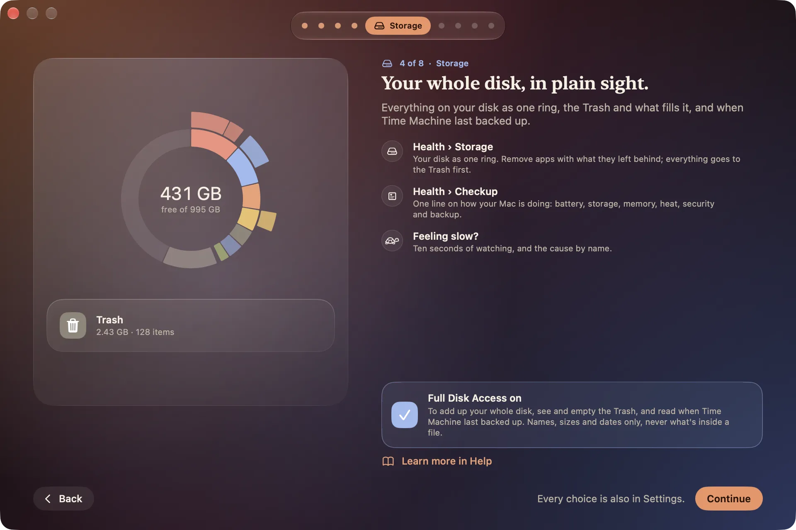
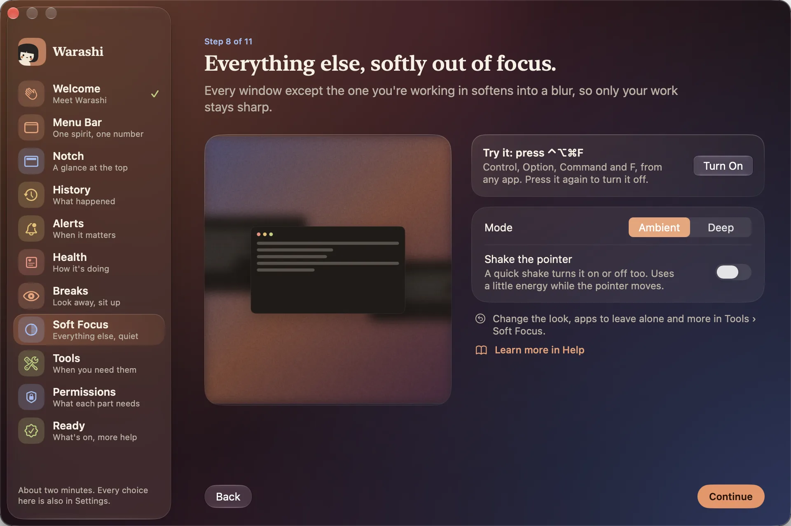

Na primeira vez que o Warashi abre, um tour curto e prático mostra tudo. A lista à esquerda é o mesmo mapa da janela do Warashi; clique em qualquer etapa para ir até ela. Cada página mostra a coisa real, ao vivo, e deixa você experimentar: cada chave é o ajuste real e, quando algo funciona, uma marca verde diz o que acontece agora. Cada página também diz onde mudar depois e tem Saiba mais na Ajuda, que abre aquela parte desta Ajuda. Leva uns dois minutos, e você pode pular o que quiser.
- Boas-vindas
O que é o Warashi, e quatro promessas: seu histórico fica no seu Mac, não há conta nem nada para configurar antes, ele pede só o que um recurso precisa, e estatísticas de uso anônimas ajudam a melhorá-lo. Clique em Fazer o Tour.

Página 1: Conheça o Warashi. - Barra de Menus
Escolha o número ao lado do espírito e veja sua barra de menus real mudar. Mostrar o que precisa de você faz o número trocar para um aviso quando falta memória ou o Mac esquenta. Depois experimente: clique no espírito na barra de menus, e a página confirma que a janela abriu.

Página 2: o item da barra de menus e clicar nele. - Entalhe
Experimente: deixe o ponteiro sobre o entalhe (ou a ilha em outra tela). A página percebe o painel abrir e diz o que você pode fazer com ele. Abaixo: chaves para a visão rápida, a ilha e as Contagens regressivas ao vivo, e um botão para trocar os dois números.

Página 3: o entalhe e a ilha. - Histórico
Um dia de exemplo no Diário de bordo e como clicar em qualquer momento do Histórico. Ative Registrar o app em primeiro plano para ver quanto tempo você usa cada app; a página confirma que está gravando e onde seu tempo aparece. Só as trocas de app são registradas, nunca títulos de janela, sites ou teclas.

Página 4: Histórico, o Diário de bordo e o registro de atividade (opcional). - Alertas
Quatro alertas sugeridos: um app usando muita CPU, memória crescendo rápido, o disco de inicialização enchendo e a bateria esquentando. Ative um e o macOS pede uma vez para permitir notificações. Depois de permitido, Enviar um teste mostra um exemplo e a página confirma que os alertas vão chegar. Se as notificações estiverem desativadas, ela diz onde ativá-las.

Página 5: Alertas. - Saúde
O cartão do limite de carga da janela da barra de menus, ao vivo: ative Parar a carga em e a página confirma onde a carga vai parar. Depois, como chegar a Verificação, Por que meu Mac está lento? e Armazenamento.

Página 6: Saúde. - Pausas
Uma miniatura da tela de pausa real. Ative as Pausas, escolha um ritmo (20-20-20, Pomodoro, 50 e 10 ou Trabalho profundo) e ative ou desative Sente-se direito. Experimentar uma pausa mostra uma de verdade (Pular ou Esc encerra) e Mostrar Sente-se direito mostra o lembrete de postura subindo até o centro da tela.

Página 7: Pausas. - Desfoque do fundo
Uma prévia ao vivo do Desfoque do fundo. Experimente: pressione ⌃⌥⌘F, e tudo menos o tour se suaviza num desfoque; a página confirma. Escolha Ambiente ou Profundo e, se quiser, ative a agitação do ponteiro.

Página 8: Desfoque do fundo. - Ferramentas
Ative Manter ativo por uma hora para experimentar; a página confirma que o Mac fica ativo e para sozinho. Depois, os testes de velocidade, Limpar tela e teclado, e ⌘K, que encontra qualquer ferramenta pelo nome. Veja Ferramentas.

Página 9: Ferramentas. - Permissões
O Warashi funciona sem nenhuma delas; cada uma libera uma parte dele. Cada cartão diz para que serve e se está Desativado, Quase lá ou Ativado, e a página percebe na hora quando você ativa algo nos Ajustes do Sistema.
- Notificações: pressione Permitir e o macOS pergunta uma vez (já feito se você ativou um alerta). Necessárias para os alertas.
- Auxiliar do sistema: pressione Ativar e depois ative o Warashi em Ajustes do Sistema › Geral › Itens de Início (um administrador aprova uma vez). Ele permite que o Warashi pare a carga em qualquer nível, mantenha o Mac acordado com a tampa fechada e veja os processos do próprio macOS.
- Acesso Total ao Disco: pressione Abrir Ajustes do Sistema e ative o Warashi na lista, ou arraste o ícone para lá. Assim o Armazenamento vê o disco inteiro de uma vez, e a Verificação consegue ler quando o Time Machine fez o último backup. Só nomes, tamanhos e datas, nunca o conteúdo de um arquivo. Se o macOS só aplicar depois de reiniciar o Warashi, pressione Reabrir o Warashi: o tour volta para esta página.
Cada um pode ser pulado. Dois são pedidos só quando necessário: ao remover um app pelo Armazenamento e ao esvaziar do Lixo itens que precisam da sua senha.

Página 10: Permissões (todas opcionais). - Pronto
O que está ativado: tudo o que você ajustou no tour, lido ao vivo, com onde mudar cada coisa. Continue aprendendo: Ajuda, Perguntas e respostas, Guias e Novidades, abertos em warashi.app no seu idioma. Os atalhos que valem a pena, Abrir o Warashi ao iniciar sessão para o histórico não ter lacunas, e então Começar a monitorar.

Página 11: o que está ativado e onde saber mais.
Se algo não estiver certo
- Clicar no espírito ou apontar para o entalhe não fica marcado: verifique se o item do Warashi aparece na barra de menus e se a visão rápida ao lado do entalhe está ativada.
- Pressionar ⌃⌥⌘F não faz nada: outro app pode usar o mesmo atalho. Use Ativar na página.
- Enviar um teste não mostra nada: permita o Warashi em Ajustes do Sistema › Notificações.
- O Auxiliar do sistema diz Quase lá: abra Ajustes do Sistema › Geral › Itens de Início e ative o Warashi em Permitir em Segundo Plano.
- O tour não apareceu: abra o Warashi em Aplicativos e depois Ajustes › Geral › Mostrar Boas-Vindas de Novo.
Mais em Solução de problemas, ou escreva para adam@warashi.app.